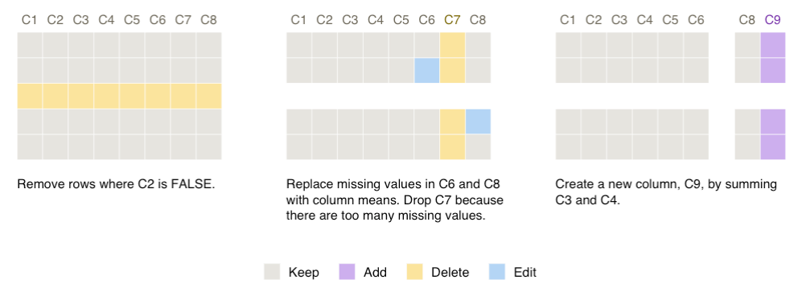

Do you use R or Python to preprocess datasets for analyses? smallsets is an R package that transforms the preprocessing code in your R, R Markdown, Python, or Jupyter Notebook file into a Smallset Timeline. A Smallset Timeline is a static, compact visualisation composed of small data snapshots of different preprocessing steps. A full description of the Smallset Timeline can be found in the paper Smallset Timelines: A Visual Representation of Data Preprocessing Decisions in the proceedings of ACM FAccT ’22. A short (3 min) and long (15 min) YouTube video provide an introduction to the project.
If you have questions or would like help building a Smallset Timeline, please email Lydia.
Install from CRAN
install.packages("smallsets")Quick start example
Run this snippet of code to build your first Smallset Timeline! It’s based on the synthetic dataset s_data, with 100 observations and eight variables (C1-C8), and the preprocessing script s_data_preprocess.R, discussed in the following section.
library(smallsets)
set.seed(145)
Smallset_Timeline(data = s_data,
code = system.file("s_data_preprocess.R", package = "smallsets"))
Structured comments
The Smallset Timeline above is based on the R preprocessing script below, s_data_preprocess.R. Structured comments were added to it, informing smallsets what to do.
# smallsets snap s_data caption[Remove rows where C2 is FALSE.]caption
s_data <- s_data[s_data$C2 == TRUE,]
# smallsets snap +2 s_data caption[Replace missing values in C6 and C8 with
# column means. Drop C7 because there are too many missing values.]caption
s_data$C6[is.na(s_data$C6)] <- mean(s_data$C6, na.rm = TRUE)
s_data$C8[is.na(s_data$C8)] <- mean(s_data$C8, na.rm = TRUE)
s_data$C7 <- NULL
# smallsets snap +1 s_data caption[Create a new column, C9, by summing C3 and
# C4.]caption
s_data$C9 <- s_data$C3 + s_data$C4Citing smallsets
If you use the smallsets software, please cite the Smallset Timeline paper.
Lydia R. Lucchesi, Petra M. Kuhnert, Jenny L. Davis, and Lexing Xie. 2022. Smallset Timelines: A Visual Representation of Data Preprocessing Decisions. In 2022 ACM Conference on Fairness, Accountability, and Transparency (FAccT ’22). Association for Computing Machinery, New York, NY, USA, 1136–1153. https://doi.org/10.1145/3531146.3533175
@inproceedings{smallsets2022,
author = {Lucchesi, Lydia R. and Kuhnert, Petra M. and Davis, Jenny L. and Xie, Lexing},
title = {Smallset Timelines: A Visual Representation of Data Preprocessing Decisions},
year = {2022},
isbn = {9781450393522},
publisher = {Association for Computing Machinery},
address = {New York, NY, USA},
url = {https://doi.org/10.1145/3531146.3533175},
doi = {10.1145/3531146.3533175},
location = {Seoul, Republic of Korea},
series = {FAccT '22}
}